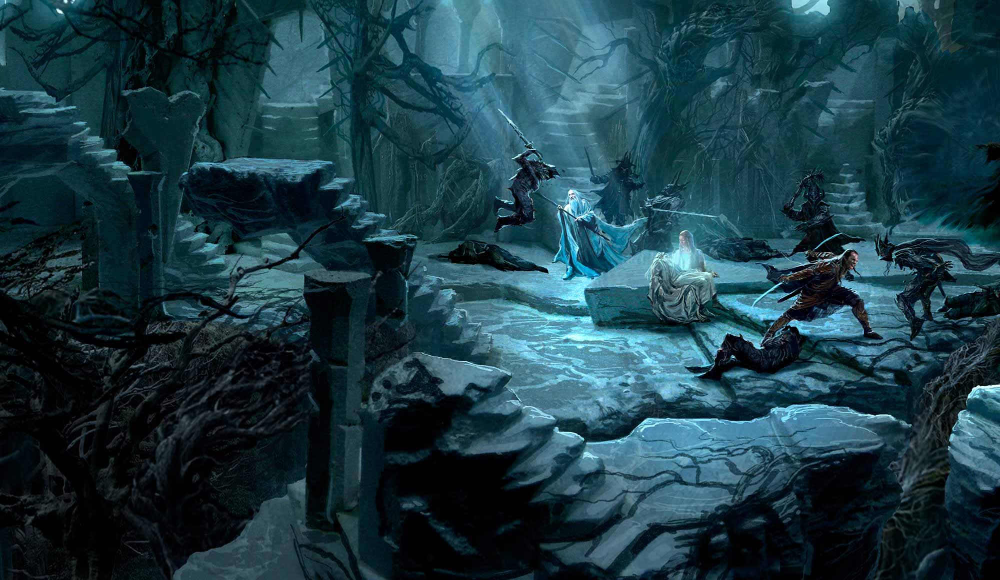
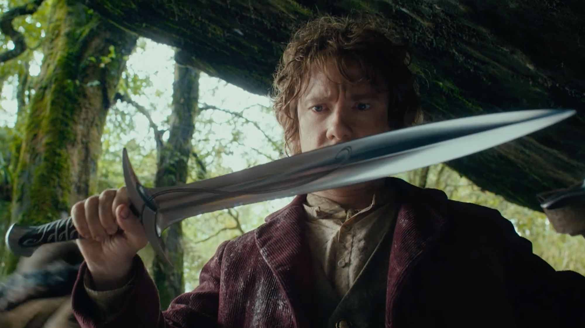

Weta Workshop School at Massey University


“ It has been a long-held dream of mine to genuinely share Weta Workshop’s approach to concept design. To realise this dream with our friends at Massey University is truly special. ”
Richard Taylor
Weta Workshop co-founder and CEO

Create your own imaginary worlds for film, TV and game by studying a Master of Design
The Weta Workshop School at Massey University is a new way to study Entertainment Design. The School offers a unique educational experience in the exciting and ever-expanding world of design research and practice.
This course will give students a dynamic range of skills to start their career in concept design and visual storytelling in the entertainment industry.
The partnership of award-winning Weta Workshop and the internationally recognised Massey University delivers an exclusive educational experience. Candidates learn from and engage with some of the industry’s finest as they work towards a Master of Design qualification from New Zealand’s oldest Design School, ranked in the top 100 Art and Design Schools in the world.
Empowering your Mastery of Concept Design
The Master of Design, specialising in Entertainment Design, gives candidates the tools to create their own imaginary worlds for film, television, and gaming. The programme focuses on developing participants’ skills in the key areas of idea creation, storytelling, and concept design. As candidates progress through the one-year course they will expand their technical ability, develop their critical thinking skills, and take on leadership roles in real-world scenarios.
During the course of the programme, candidates will undertake and develop their own research and design project, exploring how Entertainment Design works as a tool for creating compelling characters, engaging worlds, and incredible stories. The programme culminates with a written research component presented alongside a body of concept design work.
Expert instruction from Industry Leaders
An exclusive one-year programme – starts September 2018
Programme structure
• Duration of course: 12 months full time
• Start date: 17 September 2018
• Master of Design 120 credit programme
• Students will have access to Massey University workshop, studio, teaching, and library facilities
• Location: Massey University and Weta Workshop, Wellington, New Zealand
Weta Workshop Grad Camp
An intensive week-long concept design programme run by designers from Weta Workshop and Massey University. Students will begin to develop their skills in visual storytelling by collaborating on a world-building project.
Supervisor Visits
Each candidate will be assigned two supervisors for their project, one from Weta Workshop and one from Massey University. Supervisors will jointly review students’ work throughout the duration of their project and direct their learning and skills.
Weta Workshop Internship
The course includes a two-week internship at Weta Workshop: A very special opportunity to gain an understanding of what it is like at a working design studio. Candidates will develop their communication and technical skills and work on a real concept design project, for a real client.
Application checklist
Applying for admission
Domestic students
Step 1: Check whether you are eligible to study at Massey
See our entrance requirements to determine whether you are eligible to enrol. Postgraduate research students are encouraged to make contact with the appropriate department to discuss research opportunities.
Step 2: Choose your qualification and any specialisation
For information about our qualifications view our Programmes and courses web pages or order a prospectus. You can also contact our academic advice team for advice.
If your qualification has specialisations you will be able to select one specialisation when you apply for admission. You will be able to select an additional specialisation and minors when you apply for courses if your qualification allows it.
For some qualifications you will need to provide specific information which is detailed on the Programmes and courses web pages. Research students should consider how many credits of research they intend to do if their qualification offers a choice.
Step 3: Check out the application due dates
Make sure you know the application due dates so you don't miss out. Note that there are some qualifications with special selected entry processes whose applications need to be filled out extra early.
Step 4: View fees and funding options
Make sure you know the You can view an estimate of your fees on the Fees web pages. To help fund your study check out our Scholarships and awards web pages. For information about student loans and allowances see the StudyLink website.
Step 5: Find out about recognition of prior learning
Credit can be awarded for completed tertiary qualifications, for incomplete tertiary qualifications, and for informal learning. For details see recognition of prior learning.
Step 6: Apply for admission
All new students should apply for admission online. Returning students should log into your student homepage and click on the Qualifications and courses tab.
Step 7: Find out what happens after you apply
For details see what happens after you apply.
International students
Step 1: Check whether you are eligible to study at Massey
See our entrance requirements to determine whether you are eligible to enrol. Postgraduate research students are encouraged to make contact with the appropriate department to discuss research opportunities. to determine whether you are eligible to enrol. Postgraduate research students are encouraged to make contact with the appropriate department to discuss research opportunities. to determine whether you are eligible to enrol. Postgraduate research students are encouraged to make contact with the appropriate department to discuss research opportunities.
Step 2: Choose your qualification and any specialisation
For information about our qualifications view our Programmes and courses web pages or order a prospectus. You can also contact our academic advice team for advice.
If your qualification has specialisations you will be able to select one specialisation when you apply for admission. You will be able to select an additional specialisation and minors when you apply for courses if your qualification allows it.
For some qualifications you will need to provide specific information which is detailed on the Programmes and courses web pages. Research students should consider how many credits of research they intend to do if their qualification offers a choice.
Step 3: Check out the application due dates
Make sure you know the application due dates so you don't miss out. Note that there are some qualifications with special selected entry processes whose applications need to be filled out extra early.
Step 4: View fees and funding options
Make sure you know the You can view an estimate of your fees on the Fees web pages. To help fund your study check out our Scholarships and awards web pages. For information about student loans and allowances see the StudyLink website.
Step 5: Find out about recognition of prior learning
Credit can be awarded for completed tertiary qualifications, for incomplete tertiary qualifications, and for informal learning. For details see recognition of prior learning.
Step 6: Apply for admission
All new students should apply for admission online. Returning students should log into your student homepage and click on the Qualifications and courses tab.
Massey University
College of Creative Arts
+64 (04) 801 5799 ext. 63177
loki@massey.ac.nz
Luke Hoban
Graphic Designer

Massey University
College of Creative Arts
+64 (04) 801 5799 ext. 63177
loki@massey.ac.nz
Luke Hoban
Graphic Designer
Massey University
College of Creative Arts
+64 (04) 801 5799 ext. 63177
loki@massey.ac.nz
Luke Hoban
Graphic Designer
Weta Workshop
Weta Workshop is a multi award-winning design studio and physical manufacturing facility servicing the world’s entertainment and creative industries.
Drawing on more than 27 years of filmmaking experience, five-time Oscar-winning Design and Effects Supervisor Richard Taylor and the Weta Workshop crew engage in projects from the earliest stages of technical analysis and creative design, through to manufacture across all departments and final delivery on set to anywhere in the world.
Thor: Ragnarok
Behind the scenes with Weta Workshop

Watch our show reel
Blade Runner 2049
Weta Workshop making minatures
Ghost In The Shell
Weta Workshop behind the scenes
Massey University College of Creative Arts,
Wellington, New Zealand
Ngā Pae Māhutonga – the School of Design is acknowledged as providing one of the best design educations in the Asia-Pacific region. The contemporary portfolio of courses, faculty of internationally recognised leaders in design research and practice, and world-class facilities provide an ideal environment for students to realise their full creative potential.
The School of Design offers five major design specialisms in fashion, industrial, spatial, textiles and visual communication design combining graphics, digital media, advertising design and illustration. The programme allows for a number of minor options, which flexibly enable students to explore and develop a range of interdisciplinary design skills. In the course of their study students address local and global issues producing inspirational design solutions for a rapidly changing world.
Students achieve the highest level of success in national and international competitions and awards including: Best, Red Dot, AGOTYA, WOW, Dyson, Electrolux, Sony, and LG.